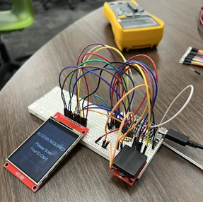
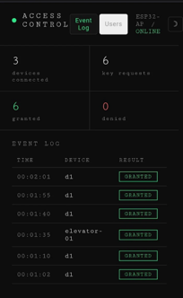

Hackathon
FloorLock Smart Access Control
Built a smart elevator access control system during a hackathon that restricts floor selection to authorized users via an admin-managed backend running on ESP32 microcontrollers.

System Overview
FloorLock is a smart access control system designed and built during a hackathon in partnership with Zachary Thornton. The system uses ESP32 microcontrollers to create a fully self-contained access control network — one ESP32 acts as a central host that creates its own WiFi network, checks key requests against an access database, logs all events, and serves a web-based admin interface at 192.168.4.1. Additional ESP32 nodes function as door or elevator panel readers that grant or deny floor access based on the host's authorization decisions.
The entire system is fully isolated and self-hosted — no external internet connection is required. The host ESP32 serves the admin panel as a web page over its own WiFi network, allowing building managers to add or revoke keycards, view access logs, and manage floor permissions from any browser-connected device within range.
Technical Architecture
Built using PlatformIO and the Arduino framework, the firmware leverages the ESP32's dual-core processor to handle concurrent Wi-Fi client connections, SPIFFS file system operations, and real-time access control logic. The web interface uses LittleFS to serve static assets and provides a responsive admin dashboard for managing users, tracking access events, and configuring per-floor permissions. Each door ESP32 communicates with the host over the local Wi-Fi network using a lightweight custom protocol.
The hardware is built around an elevator-style button panel and an LCD display that provides immediate feedback to users — a green indicator for authorized access and red for denied attempts. The admin panel runs in a browser and shows a clean console layout with real-time event logging.

Documentation
Below you can view the detailed project documentation.